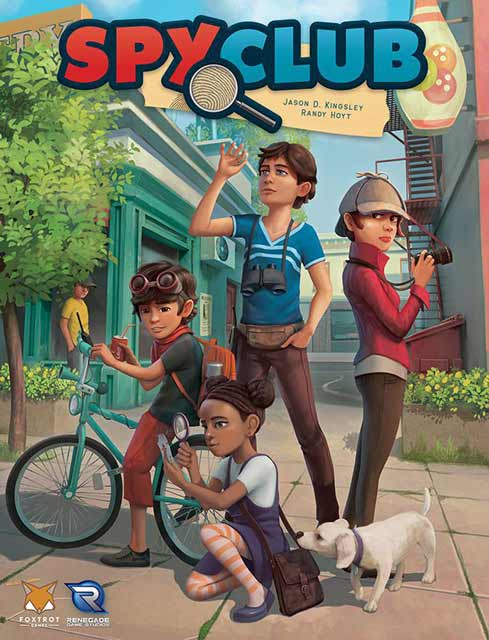
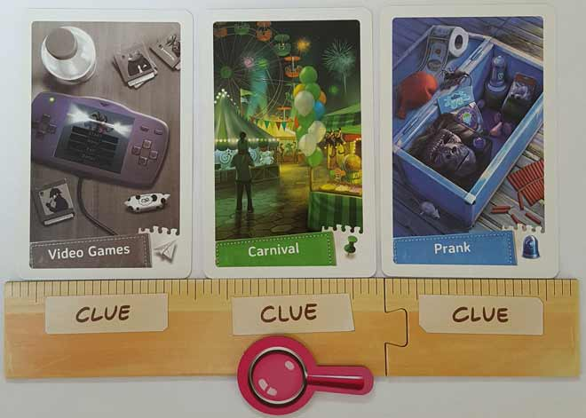
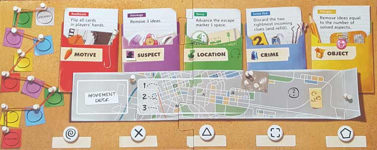
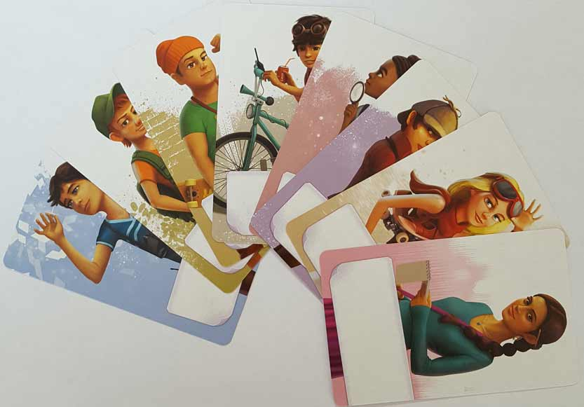
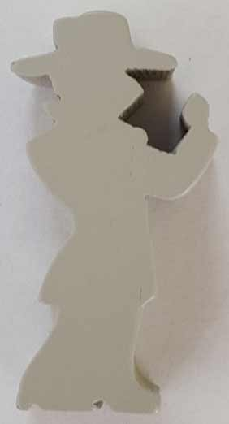
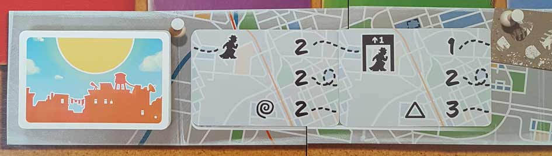

In this Spy Club review, D and Will analyze the standard format of this cooperative, child detective-themed board game. Published by Foxtrot Games and Renegade Game Studios, Spy Club has its players taking on the roles of child spies/detectives as they solve various mysteries in their hometown. In reality, players will draw and play different colored cards in order to figure out different aspects of a case. If they solve all five aspects, they’ll unravel the mystery and win the game. But they’ll have to be wary, as the suspect is on the prowl and looking to strike! For our thoughts on this one, continue reading below.

D reviews Spy Club
 (Author’s
note: this review is meant to accompany our gameplay video and will not
go in-depth on the game’s rules. If you’re interested in learning how
the game is played, please watch the video. It’s not bad.)
(Author’s
note: this review is meant to accompany our gameplay video and will not
go in-depth on the game’s rules. If you’re interested in learning how
the game is played, please watch the video. It’s not bad.)
Before I get to my thoughts on Spy Club, I want to mention that I won’t be giving the game a score. I’ve read the entire rulebook and am aware of the additional mechanics that the campaign mode introduces, but all of my experiences with the game have been one-offs. And while I’ve certainly graded games before that have alternate play modes that I haven’t tried, the campaign mode in Spy Club seems like the definitive way to play the game, so I don’t feel comfortable giving it a score without trying that first. If we receive positive feedback and retroactively consider the game in our video as “case 1”, then I’ll come back and deliver some additional thoughts and a proper score for the game. But for now, please enjoy my incomplete, but otherwise flawless, opinions.
I was pretty intrigued when it came time to tackle Spy Club. I like board games. I like solving mysteries. I like board games that involve solving mysteries. Not long into my initial reading of the rulebook, however, I had the following thought: “oh, it’s like Mysterium”. When I was explaining the rules to Will and Graham, Will literally said those exact words himself. Mechanically they’re very different games, but what they share in common is that the elements of the “mystery” are not determined in advance, but rather figured out by the players through their actions throughout this game. I would be lying if I said this wasn’t disappointing. It’s not fair to criticize a game for what it isn’t, but when I’m playing a game where I’m a detective, I want to feel like a detective. Spy Club doesn’t offer that. Mysterium, to its credit, does at least rely on some deduction and reasoning, and sort of requires a bit of detective work at the end. In Spy Club, the spy stuff is all just set dressing for a fairly light strategy game.
And hey, I enjoy a light strategy game when it’s well done. So, beyond my initial disappointment, is Spy Club any good? As a single session, I’d say it’s fine. A lot of it comes down to coordination and how lucky you get with the movement cards. In the session we played in our video (some video spoilers ahead), I think we strategized really well, but I also think we got pretty lucky. Solving all five aspects of the case was pretty stress-free, but a lot of that came down to the suspect token frequently landing on gray cards. We could have played the game on the harder difficulty and I don’t think anything would have changed at all. But in a session where the suspect is frequently landing on certain colors (purple, orange, blue), it can be quite challenging. To the designers’ credit, the players are presented with plenty of ways to account for potential bad luck, and the game feels pretty well-balanced overall. I just don’t know if the core gameplay loop is all that fun. It’s not bad, and there can be moments that are satisfying, but there’s very little in the way of intrigue or excitement. From what I’ve read, the campaign mode likely makes things a bit more interesting by adding or changing rules, but the basic game is mostly just functional.
On the bright side, Spy Club looks and feels great. You should probably expect pretty nice quality and presentation when a couple publishers like Foxtrot and Renegade team up to produce a game, and they do not disappoint. The components are all high quality, from the cards to the board, and they even include several plastic baggies, which is always a nice touch. The art, credited to Dan Blanchett, Bartłomiej Kordowski, Malwina Kwiatkowska, Keith Pishnery and Helen Zhu, is top notch. It really captures the essence of pleasant, sunny, suburban adolescence. And while I never was in a spy club myself, a lot of the art still evoked a familiar, slightly nostalgic feeling that I appreciate. If I have a criticism in this area, it’s just that I wish there was more art. There’s a lot of repetition on the clue cards, and while I know that this comes into play during a campaign, I imagine it wouldn’t have required too much tweaking to have a bit more variety for each aspect. Overall though, the production quality is quite excellent.
It’s not the end of the world when a game has a tacked-on theme. If it plays well enough, that’s an easy enough thing to overlook. Targi, which we played last week is a good example of this. It could easily be redesigned to incorporate countless cultures and it would be just as good because the gameplay is excellent. The problem I have with Spy Club is that, in this case, the tacked-on theme is more interesting than the game itself. I don’t what to keep harping on about this because it’s far from a bad game, and I know I haven’t experienced it at its best yet, but Spy Club needs more spying. And hell, it needs more club too. Different roles or specialties could be a lot of fun and make those character cards more interesting. As it is, Spy Club is an alright game, just make sure you know what you’re getting into first.
Will reviews Spy Club
 As I’m sure D also pointed out – this review is for the standard, standalone variant of Spy Club and not for the campaign mode. If we ever play the campaign format, we’ll provide written updates accordingly.
As I’m sure D also pointed out – this review is for the standard, standalone variant of Spy Club and not for the campaign mode. If we ever play the campaign format, we’ll provide written updates accordingly.
As a child, I often fantasized about being a cop or a spy, and I remember roleplaying through a number of self-made mysteries throughout my humble childhood home. I also remember watching the movie Clubhouse Detectives, in which a group of youths investigate their neighbor after he murders a woman. Sheesh now that I think of it, kids movies were kind of messed up in the 90s. But back to my main point – my passion for that sort of stuff is why I was so drawn to Spy Club, a cooperative game for 2-4 players. Unfortunately, while the game’s artwork and theme tickle my childhood spy fancy (probably could’ve worded that better), the gameplay leaves me wanting.
From a component standpoint, Spy Club really impresses me. First off, the cards, board, and other pieces are all well made, which I’ve come to expect from Foxtrot Games and Renegade Game Studios products. Secondly, the presentation of said components matches to a T what I think of when I visualize a group of friends pretending to be spies/detectives. The characters aren’t dressed up like James Bond or Sherlock Holmes, and they don’t utilize any fancy gadgets. Nope, what makes them spies are their imaginations, and this game fully understands this. In other words, the artwork is thematically on point. It’s also colorful and cute, and it’s clearly made with families in mind. I do think that the art style is a bit safe and uninspired, but it definitely does what it’s supposed to do.
Visually, Spy Club is everything one could want from a game like this. Gameplay-wise however, it just doesn’t get the job done, though it does feature some positive qualities. I’ll start with what I consider its most inexcusable issue – Spy Club doesn’t actually incorporate mystery (and the satisfaction of solving mysteries) into its gameplay. In practice, all you do in this game is play cards of a certain color until you’ve done so enough to “solve” a portion of the crime. When you do this, what you’re really doing is adding a new piece (location, motive, etc.) to the case. In other words, you’re creating the story as you play and place cards, but this doesn’t feel very sleuth-y. Quite the opposite actually, as detectives or spies usually know the crime first and work backwards to figure out its elements and suspects. All of this means that at the end of the game, instead of having that “Yes, we solved it!” moment, you’ll actually have a “So that’s it?” moment. I much prefer the former.
Even though Spy Club’s pay-off is lackluster, the journey to it is actually pretty fun. I attribute most of that fun to the Suspect pawn, which moves around the player boards from clue card to clue card. Whenever this pawn lands on a card, the ability (on the main board) that corresponds to the color of that card is activated. All of these abilities are bad, but only a couple are absolutely awful. This means that you and your friends have to strategize about which colors to prioritize early, as well as which cards in hand need to be flipped in order to avoid activation, and so on. Take yellow “Object” cards for example – if the Suspect pawn lands on one of them, you’ll have to remove the number of Ideas tokens equal to the number of aspects solved in the case. That’s obviously not a huge deal early in the game, but if you’re on – let’s say – the fifth and final aspect, then losing four Ideas tokens could be absolutely devastating.
Basically, the Suspect pawn creates chaos in what is otherwise a vanilla experience. At the same time though, this pawn and its function fosters a replayability problem. Once you play Spy Club a few times, you quickly realize that certain colors, like purple and yellow, are horrible to activate and need to be neutralized early. This means that you and your party will likely focus on solving those aspects as early as possible, so as to remove any reason for keeping them on your player board. In other words, you’ll find yourself following the same strategy in every session. Sure, there’s always a chance the cards won’t go your way and that strategy won’t be possible early on, but since yellow cards are the most prevalent, it’s highly unlikely. Also, once you realize that quickly getting rid of purple and yellow is the way to go, the game becomes a whole lot easier. In fact, it becomes so easy that I don’t know if I’ll ever fail again when playing it, and that’s kind of sad.
Though, there are other gameplay mechanics that I enjoy here. The Suspect pawn movement cards are clever in both function and design. I like that the Suspect can move as few as one space and as many as five spaces, depending on what time of day it is. That much variance in movement keeps things interesting and forces you to constantly consider how far he may move at any one time. Also, I like the concept of the Ideas tokens – how they’re basically thought currency. The fewer you have of them, the harder Spy Club becomes. Thematically, I like to think of them as if they’re the kids’ attention – the fewer you have, the less interested the kids are in the case and the more they want to head home for supper.
At the end of the day, I wanted to walk away from Spy Club with a smile on my face. Instead, I walked away with an indifferent grin, like the one you’d have if you enjoyed something in the moment but knew you’d forget about it shortly afterwards. I need to reiterate – this is a review of only the standard variant of this game. It’s pretty clear from the rulebook (and the load of extra cards/components) that the best way to play is via the game’s built in campaign mode. After playing the standalone format, I think I understand why that is. It feels like three-quarters of a fully fleshed out game – it’s playable and occasionally really good even, but it never feels completely satisfying. To put it differently, the standard variant is substandard, and if that’s the only way you can play, then you may want to try something else.
I give Spy Club (standard format) a: C+
Spy Club – Board Crazy’s Ratings
Сialis
Spy Club Review – Standard Mode Woes | Board Crazy